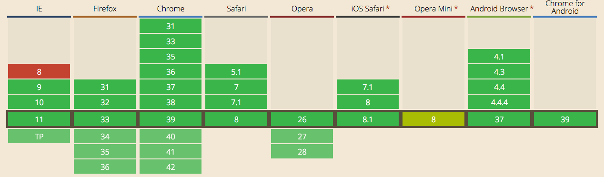
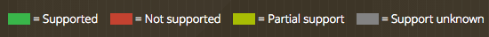

Greg Tatum / gregtatum.com / @TatumCreative
A new web standard to leverage the power of the graphics card to draw crazy stuff in the browser.
WebGL brings the power of 3d to the web.
The control code for WebGL is written in JavaScript.
The shading is handled by compiled shader code. written in GLSL (based on the syntax of C)
The canvas element lets you draw on a bitmap image right within the browser without effecting any other DOM elements or causing re-paints.
You can render in both 2d and 3d on canvas using the standard 2d context, or the WebGL context (where supported).
Browser events are limited, so user interaction can be a bit trickier compared to SVG drawing, which does effect the DOM.
An open source javascript 3d library that can render scenes using a variety of technologies including WebGL.
It gets rid of a lot of the pain and technical know-how of interacting with a WebGL context.
 
IE8 - http://flashcanvas.net/
IE8 - fuggedaboutit
//Create a buffer of 16 bytes
var buffer = new ArrayBuffer(16);
//ArrayBuffer with a Float32 view
var floats = new Float32Array(4); //16 bytes
// [0, 0, 0, 0]
floats[1]; // 0
floats[1] = 5745.55; //5745.55
floats[2] = "67"; //67
floats; //[0, 5745.5498046875, 67, 0]
void main() {
gl_Position = projectionMatrix *
modelViewMatrix *
vec4(position,1.0);
}
void main() {
gl_FragColor = vec4(1.0, 0.0, 1.0, 1.0);
}
github.com/TatumCreative/sandbox
Graphics card leveraged rendering – the browser vs native environments